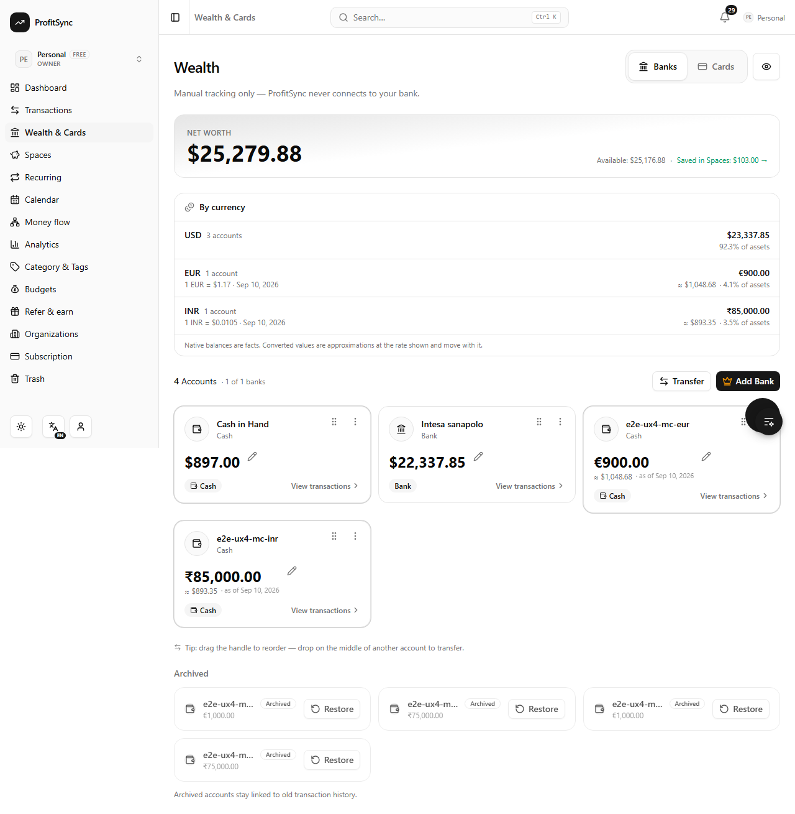
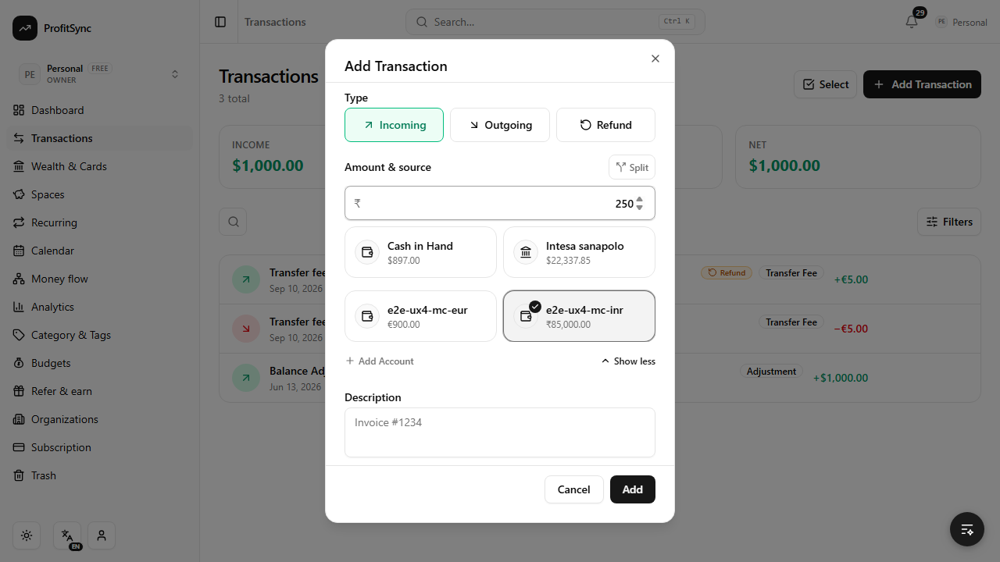
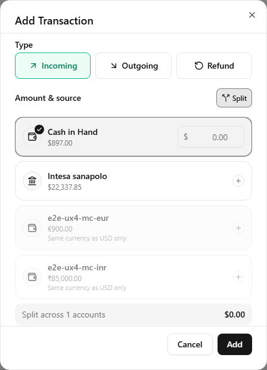
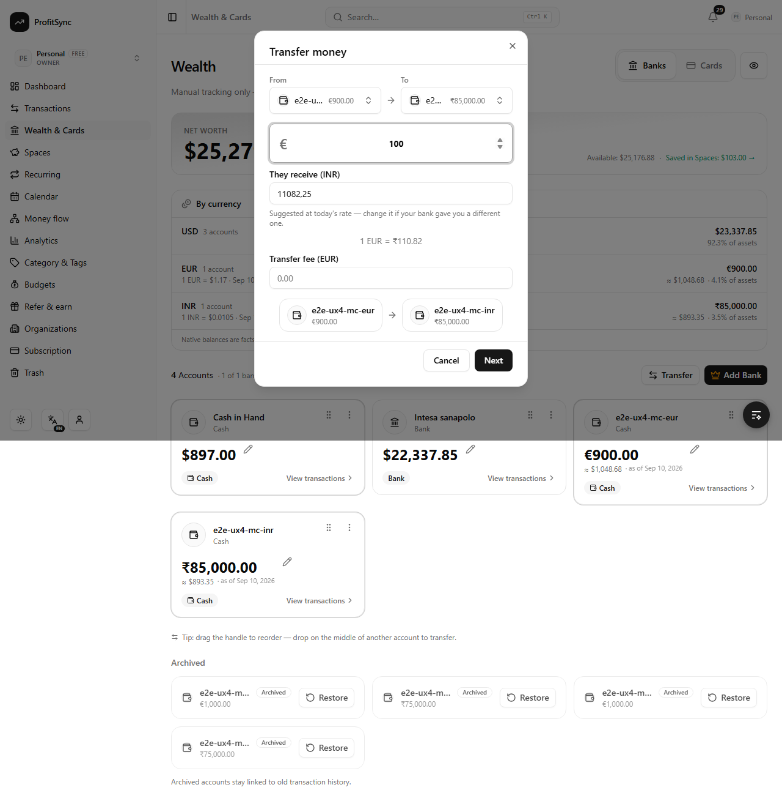
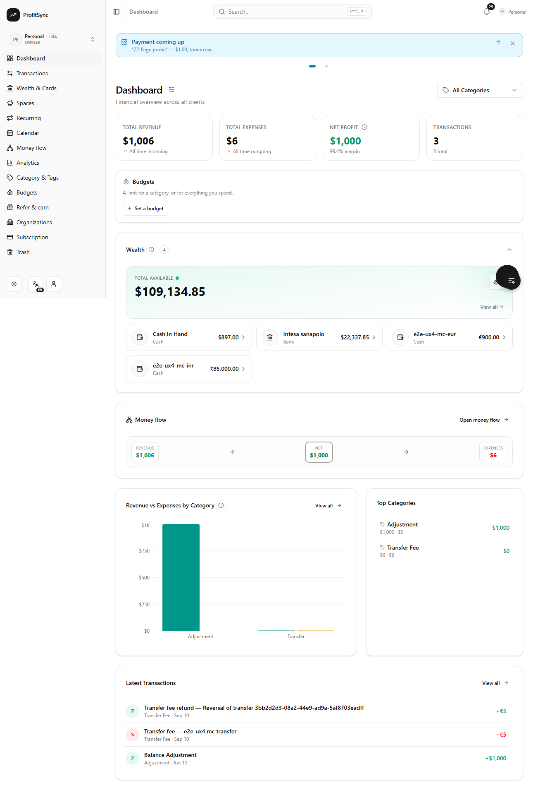
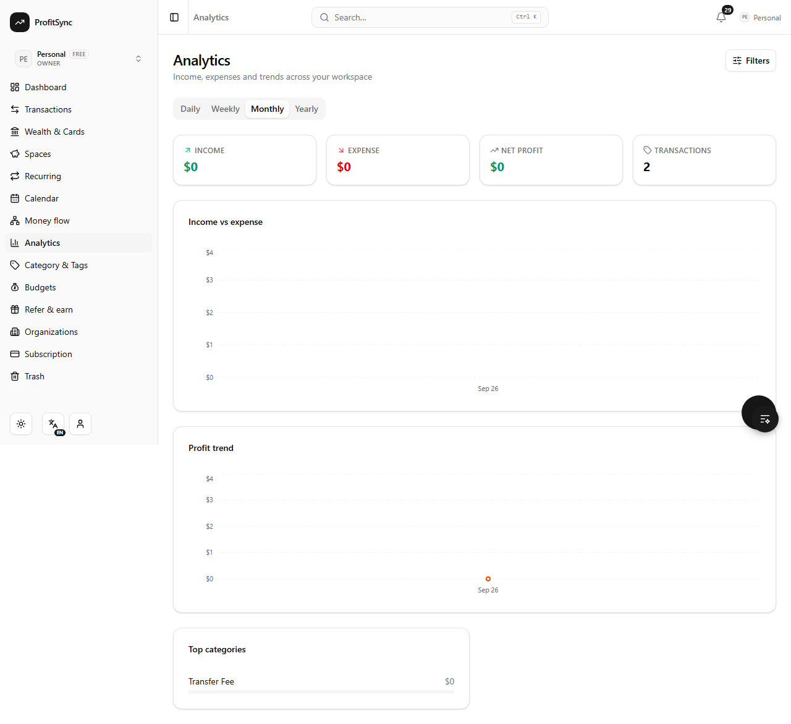
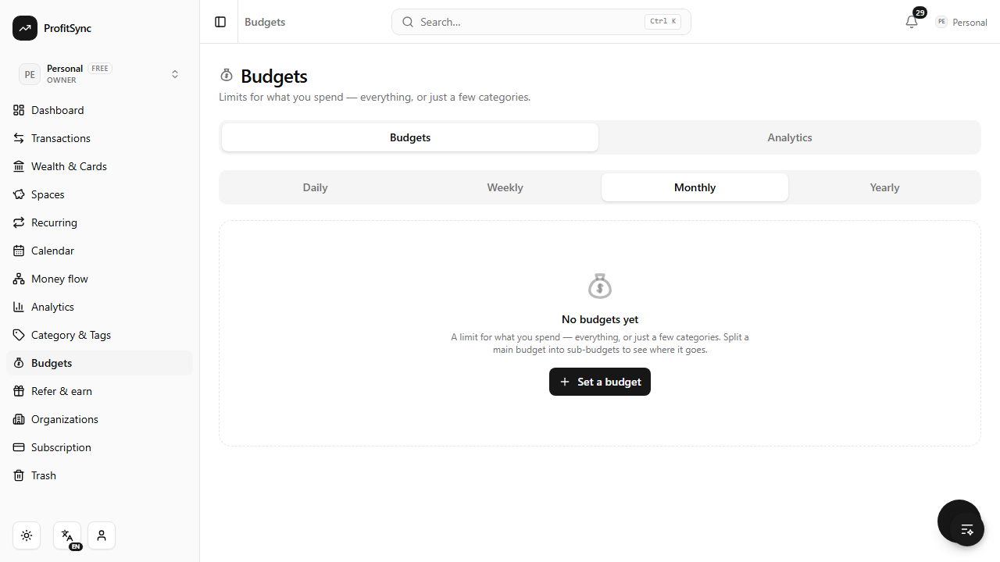
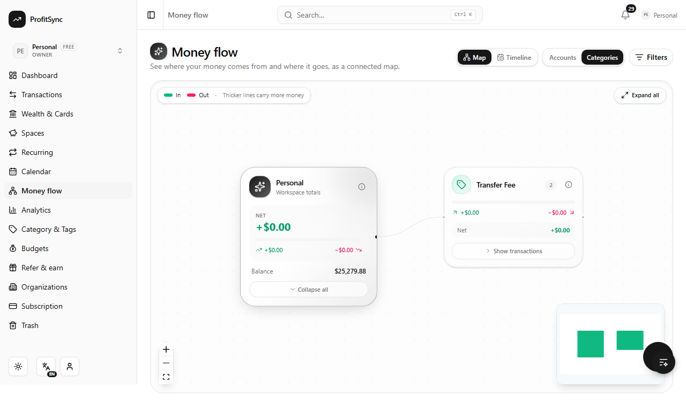

One workspace, many currencies. Every account keeps its own money; every total says what it is worth, at which rate, and what it had to leave out.
A person with money in Italy and India adds a euro account and a rupee account to the same workspace. Nothing else about the app changes: the euro account is in euros, the rupee account is in rupees, and the totals are in whichever currency they chose to read in.

≈ underneath only when it differs from the reporting currency. Rupee amounts are grouped the Indian way.A native balance is a fact. ₹75,000 stays ₹75,000 tomorrow. A converted value is an approximation at a stated rate on a stated date, and the screen says so in words. If a currency has no rate, it is listed natively and excluded from the total, with the exclusion named. Nothing is ever silently counted as 1:1.
The transaction form follows the account you pick. Choose the rupee wallet and the amount field asks for rupees; every account in the list shows its own balance in its own currency.

A split is one purchase paid from several accounts, so it is one amount — and amounts in different currencies cannot be added. Picking a second account in another currency is refused with “Same currency as USD only” rather than producing a meaningless total.

The transfer form asks what leaves and what arrives. It fills the arrival in for you at today's market rate, and then gets out of the way: banks rarely give the market rate, so the moment you edit the figure it is yours, and what the ledger stores is what you actually received.

| Event | Source | Destination | Income | Expense | Net worth |
|---|---|---|---|---|---|
| €300 → €300, same currency | −€300 | +€300 | 0 | 0 | unchanged |
| €500 → ₹51,350, no fee | −€500 | +₹51,350 | 0 | 0 | ≈ unchanged |
| €500 → ₹51,350, €5 fee | −€505 | +₹51,350 | 0 | €5 | −€5 |
| Reversal of the above | +€505 | −₹51,350 | 0 | fee refunded | restored |
| Scheduled, not yet done | — | — | 0 | 0 | unchanged |
The principal is never spending. Only the fee is. Both native amounts and the rate actually obtained are stored on the transfer and never recalculated from a later rate.
Every report converts each row at its own date, not at today's rate, so a chart of last year does not move when the rate moves this morning. Each response names the currency it is in and how many rows it could not convert; the screen says so in one calm line rather than under-reporting in silence.




wealth_accounts.currency_code — set at creation, locked once the account has historytransactions.currency_code — snapshotted from the account on every writeorganizations.reporting_currency; currency stays as the compatibility aliasfx_rate_snapshots — one row per pair per day, with provider and source; weekends carried forward and flaggedfx_rate_on() and reporting_amount() (migration 0074), so every aggregate converts per row without a jointransfers — one logical row above the two legs, holding both native amounts, the effective rate and the feedecimal.js throughout the money paths; no binary floating point in the ledger| Route | What it does |
|---|---|
GET /api/wealth/summary | Native totals per currency, converted equivalents, net worth, rate dates, complete and excluded_currencies |
GET /api/fx/rate?from=&to= | Today's market rate for one pair; 404 when none exists, so the form just asks for both amounts |
GET /api/wealth/transfers | Planned and pending transfers (and completed on request) |
PATCH /api/wealth/transfers/:id | planned → pending → completed, or cancelled |
POST /api/wealth/transfers/:id/reverse | Reverses a completed transfer once, using its own stored amounts |
A rate provider receives a currency pair and a date. It never receives an amount, an account name or a description. Conversion happens inside ProfitSync or in the database.
C:\Dev\ProfitSync-Codex. C:\Dev\ProfitSync is untouched.when values from 1788980400000 up. A branch whose migration has a lower value will be silently skipped on a database that already ran these — the Debt & Loans branch is the one to check. actionnpm run cap:sync:android and npm run cap:sync:ios. actionA reversed transfer cannot be trashed. By design: trashing one half of a reversal pair would leave balances wrong. The consequence is that an account which took part in one can only be archived, never deleted. Reasonable for an audit trail, but it is a product choice, not an accident.
Extra cash wallets used to be undeletable. The old guard refused to delete any cash account, which was correct when a workspace had exactly one. Now that a workspace can hold one wallet per currency, only the auto-provisioned “Cash in Hand” is permanent. Fixed here.
| Check | Result |
|---|---|
| Type check, lint, secret scan, route guards | pass |
| Unit tests | 925 passed across 78 files |
| Translations, cache map, ESM extensions, function boot | pass |
| Production build | pass |
e2e/multi-currency.spec.ts against localhost | 7 passed |
| Personal-workspace walkthrough | 5 passed |
| Existing smoke, alerts and budgets suites | pass, except one pre-existing failure below |
e2e/smoke.spec.ts “create a client” fails because its locator finds the hidden floating-action-button item named “Add Client” before the visible “New Client” button. It fails identically on the untouched original repository, so it predates this work.
clients.organization_id, which has none; the dev database holds ten orphaned client rows. Unrelated to this feature.